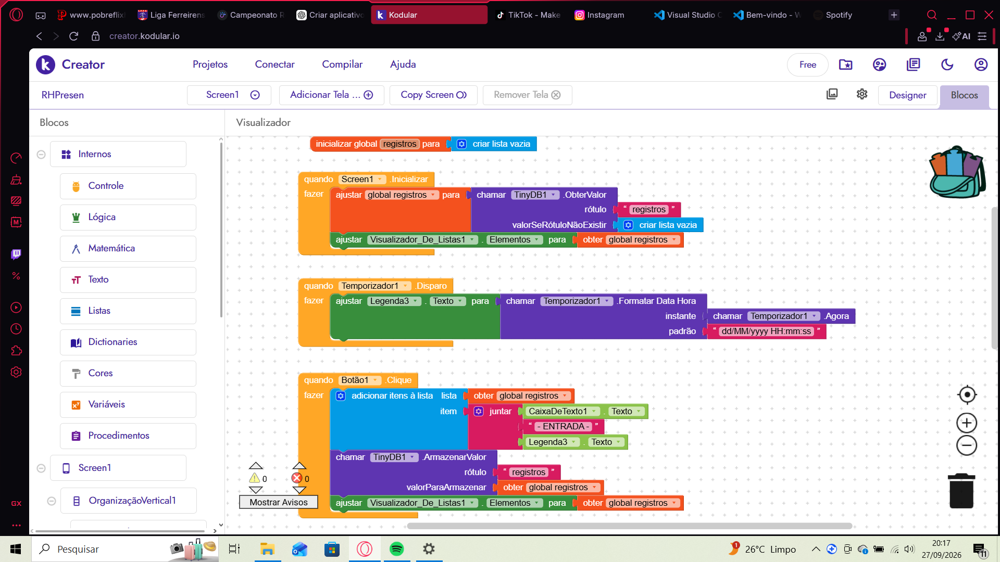
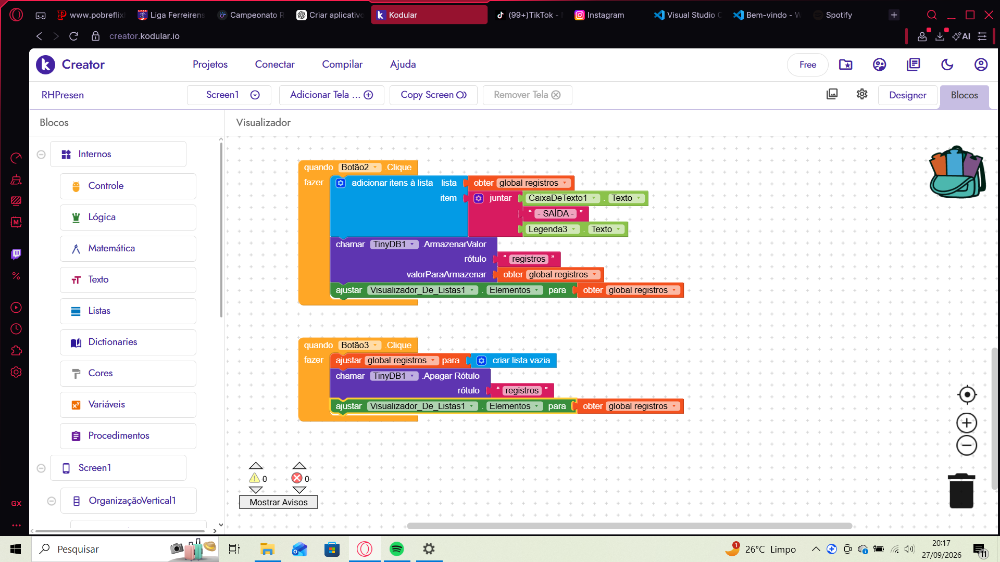
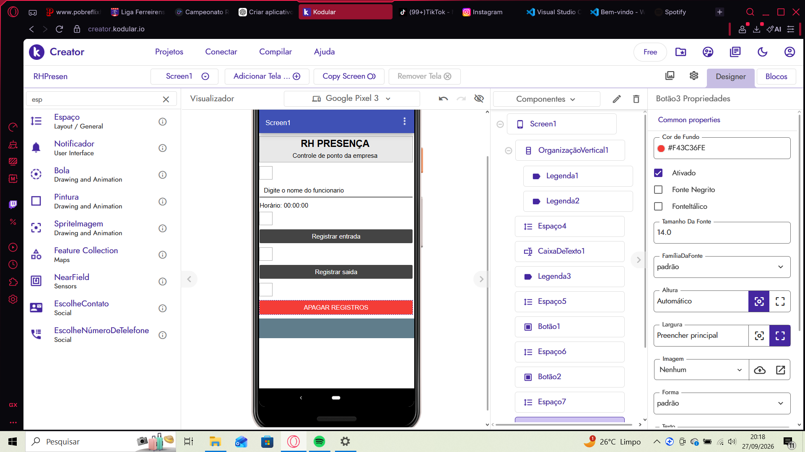

Sistema de Controle de Presença para Recursos Humanos
O RH Presença é um aplicativo desenvolvido para auxiliar o setor de Recursos Humanos no controle de entrada e saída dos funcionários. O sistema foi criado utilizando a plataforma Kodular e permite registrar horários de forma simples e rápida, facilitando o gerenciamento da frequência dos colaboradores.
Muitas empresas ainda realizam o controle de presença de forma manual, utilizando planilhas ou anotações em papel. Esse método pode gerar erros, perda de informações e dificuldades na consulta dos registros. Além disso, o gerente de RH precisa dedicar tempo para organizar esses dados.
O aplicativo RH Presença foi desenvolvido para solucionar esse problema. Com ele, o funcionário informa seu nome e registra sua entrada ou saída com apenas um clique. Os dados ficam armazenados automaticamente para consulta posterior.
O sistema é destinado principalmente para pequenas e médias empresas que precisam de uma solução simples para controle de frequência dos funcionários.
Durante o desenvolvimento do projeto foram encontrados desafios relacionados ao armazenamento dos registros, atualização automática do horário e manipulação dos componentes do Kodular. Essas dificuldades foram superadas através de testes e ajustes nos blocos de programação.



O RH Presença é uma solução simples e eficiente para auxiliar empresas no controle de frequência dos funcionários. O sistema reduz processos manuais, melhora a organização das informações e contribui para uma gestão mais eficiente do setor de Recursos Humanos.